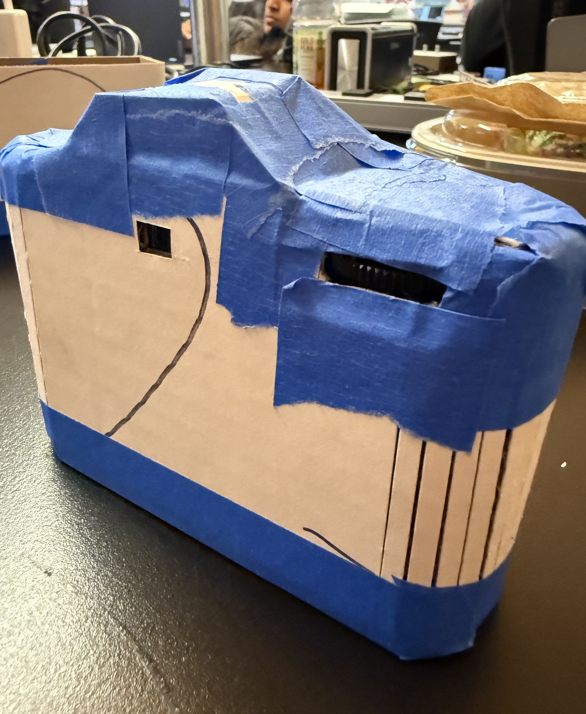
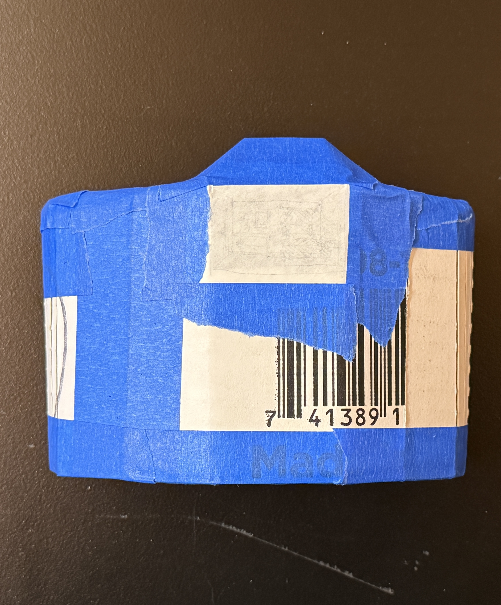
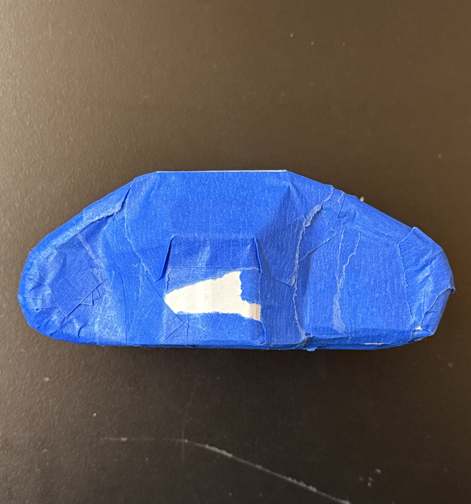
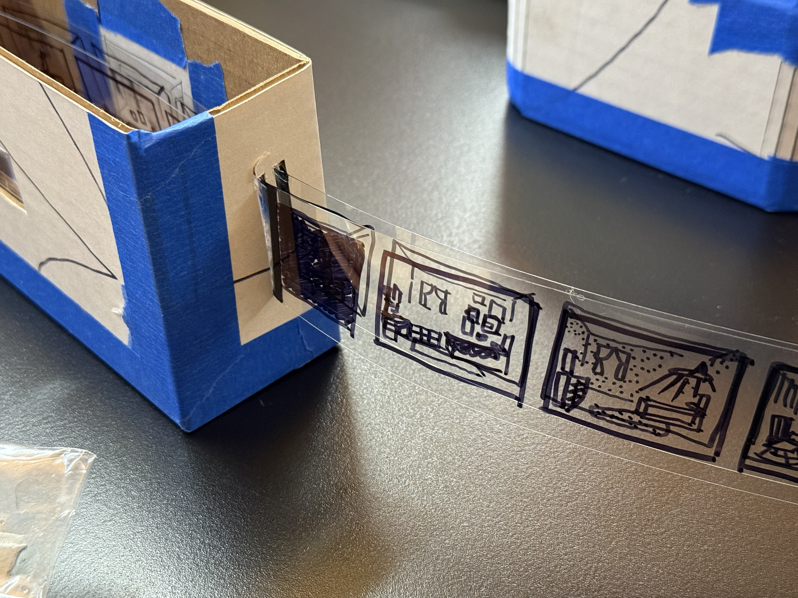
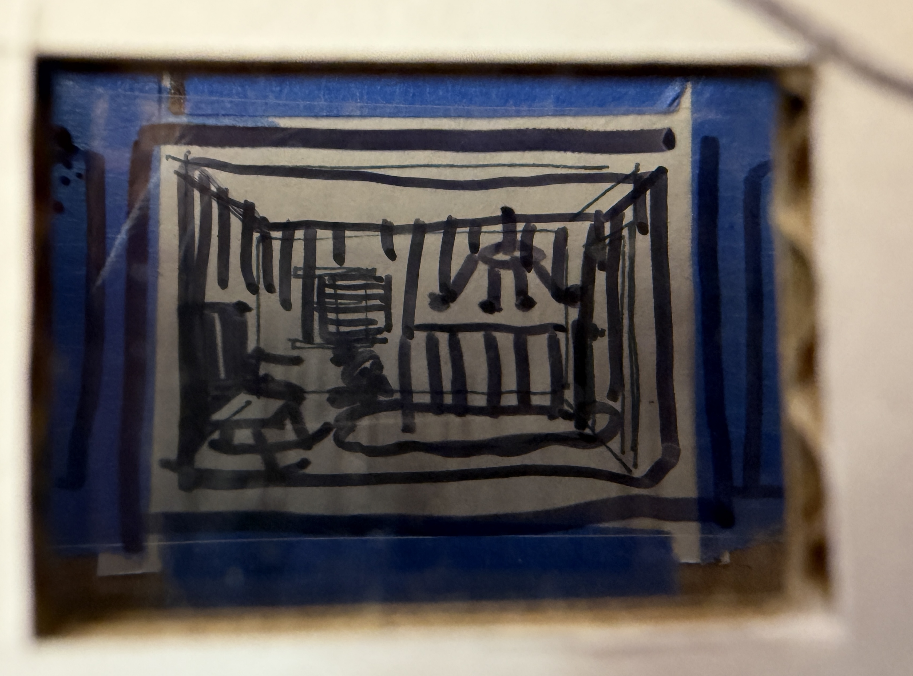
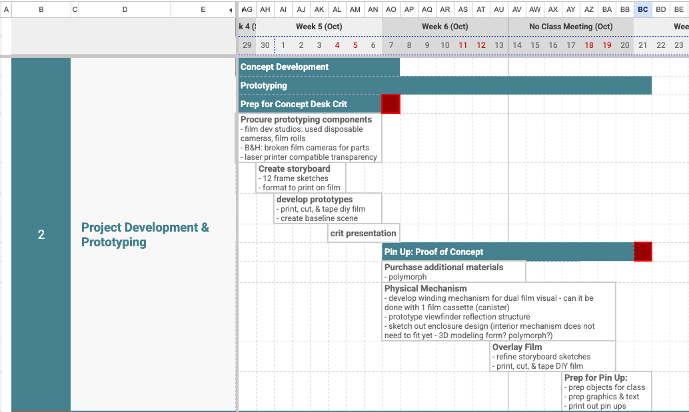
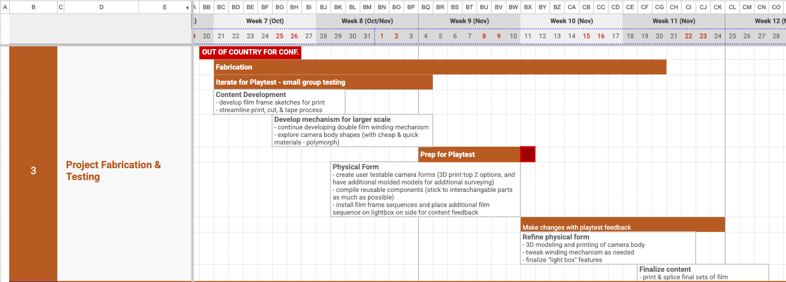
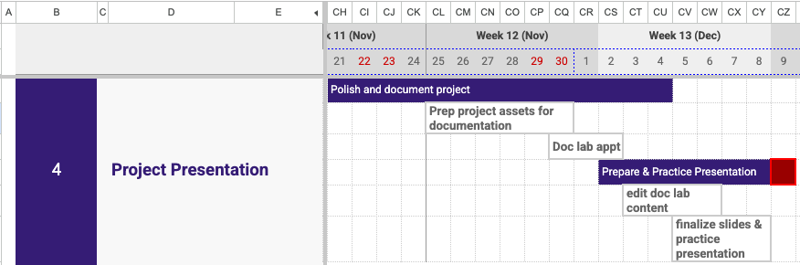

Prototype Updates
The "feels like" prototype focuses on the shape, form, and scale of the overall object. It features a small single eye viewfinder, a gear winding mechanism that has a modified level of resistance. (materials: cardboard, hot glue, painter's tape, interior mechanism of a Kodak disposable camera)



The "works like" prototype explores the layering of two "films". By providing space between the two layers, a sense of depth in perception is created, leaving room for more dynamic optical effects. (materials: cardboard, acetate transparencies, painter's tape, sharpie.)


Updated Timeline
Click here for up-to-date timeline
Phase 2 (project development & prototyping): For the next 3 weeks, there will be an
emphasis on prototyping to quickly iterate on form and interaction.
Update 2025-10-06: prototyping specifics have been updated to narrow down proof of
concept scope for
pin-up class meeting. Will be missing this class session though, so will need to discuss with Pedro
on
how to make up for that.

Phase 3 (project fabrication & testing): The month of November will focus on
developing
fabricating techniques while incorporating user testing. Towards the end of the month, there should
be
minimal notes on revisions and the final version can be printed and assembled.
Update 2025-10-06: rearranged tasks to better align with my travel schedule.

Phase 4 (project presentation): The last two weeks are reserved for final tweaks and finishes, documention, and presentation prep

Bill of Materials
Below is a tentative list of materials needed for this project: